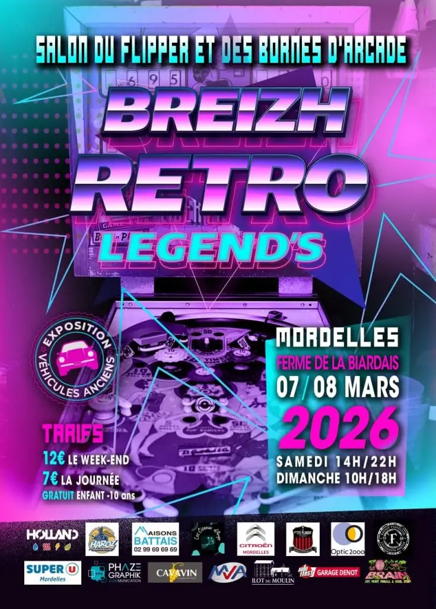
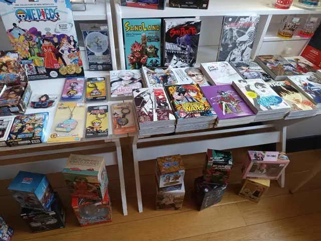
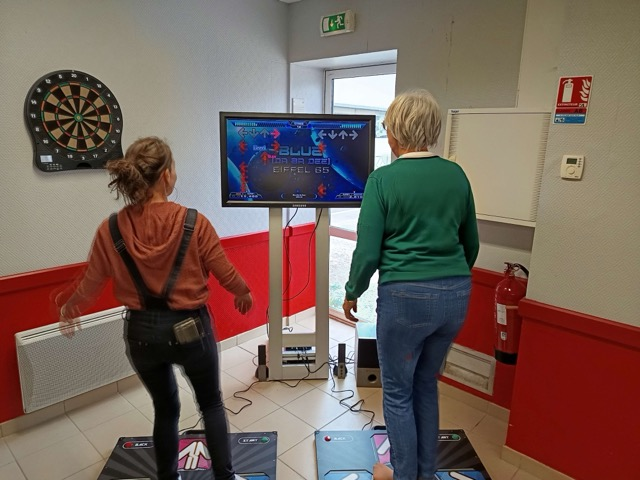
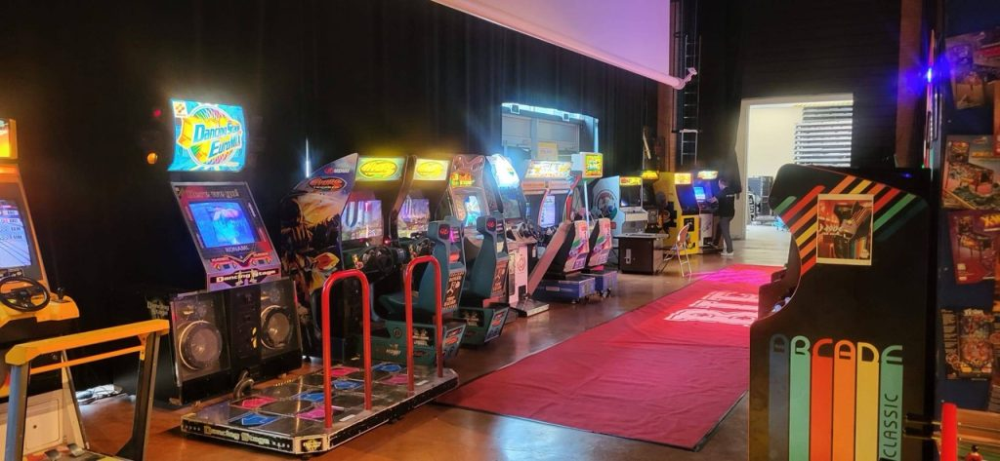
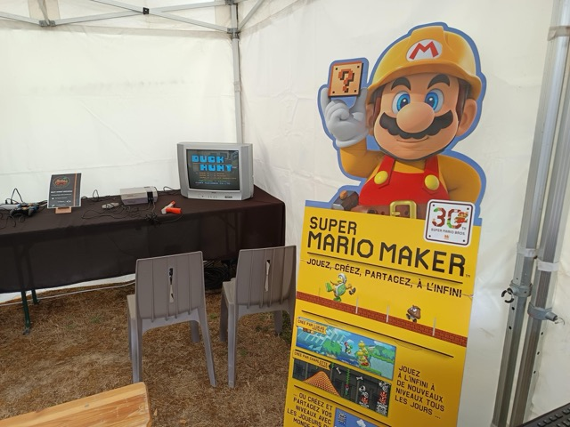
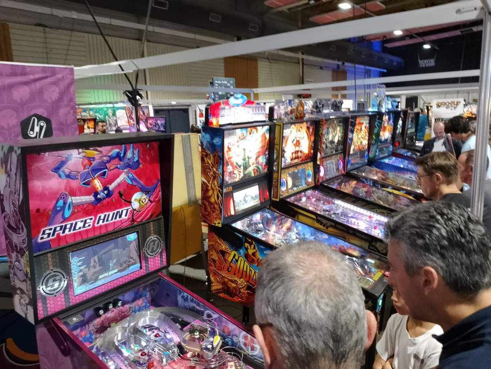
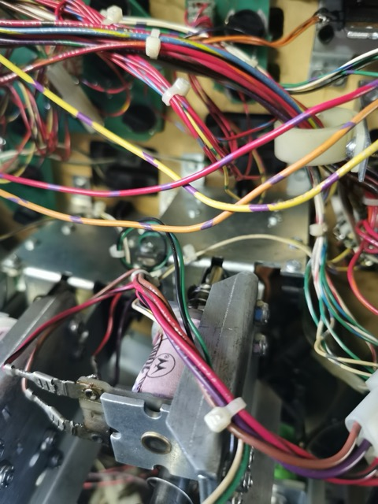

Salon du Flipper et Arcade BREIZH RETRO LEGEND'S
Venez nous rejoindre le 07 mars 2026 (de 14 à 22h) et le 08 mars 2026 (de 10 à 18h) à MORDELLES, FERME DE LA BIARDAIS pour partager avec nous les plai…
Lire l'article →
Le salon du Livre et du Jeu 2025 à Briançon
Vous souhaitez organiser un évènement autour de l'arcade et des flippers ? contactez-nous !…
Lire l'article →
La Fête du Jeu 2025 à Saint Paul du Bois
Vous souhaitez organiser un évènement autour de l'arcade et des flippers ? contactez-nous !…
Lire l'article →
LA BIF 2025, nous y étions !
Vous souhaitez organiser un évènement autour de l'arcade et des flippers ? contactez-nous !…
Lire l'article →
Mazé-Millon, le mini salon !
Vous souhaitez organiser un évènement autour de l'arcade et des flippers ? contactez-nous !…
Lire l'article →
Fête du jeu de Chemillé du 22 mars 2025
…
Lire l'article →WestCoastArcades: Une Association Dédiée à la Préservation du Jeu Vidéo Ancien
Dans un monde où le jeu vidéo évolue à une vitesse fulgurante, une poignée de passionnés s’attache à préserver son passé. C’est la mission de l’associ…
Lire l'article →
Les préparatifs du Salon Games in Cholet 2025 : Une équipe passionnée en pleine action pour un événement mémorable
Les préparatifs du Salon Games in Cholet 2025 : Une équipe passionnée en pleine action pour un événement mémorable.…
Lire l'article →Games in Cholet revient en 2025
Games in Cholet revient en 2025 pour sa deuxième convention du jeu sous toutes ses formes les 3 et 4 Mai prochains.…
Lire l'article →